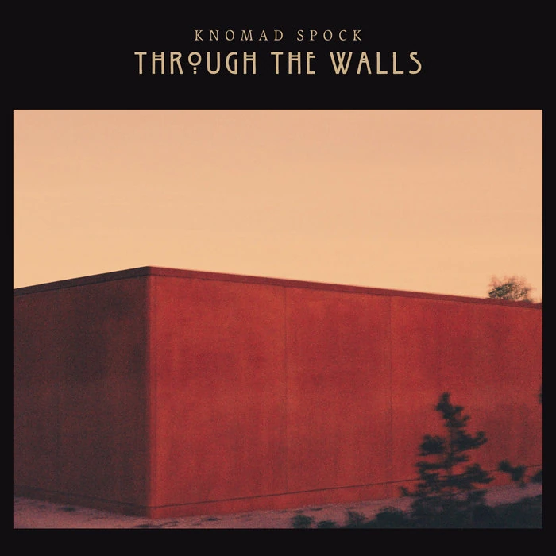
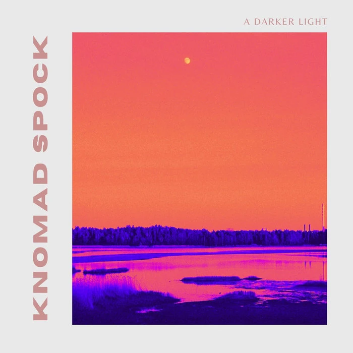
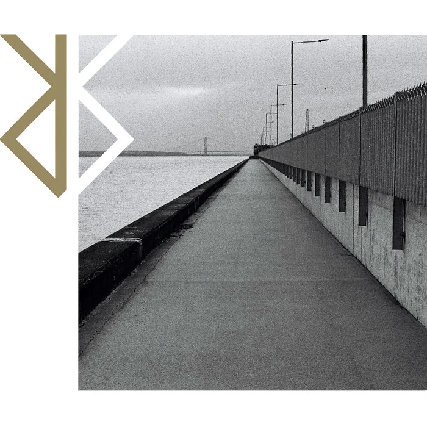
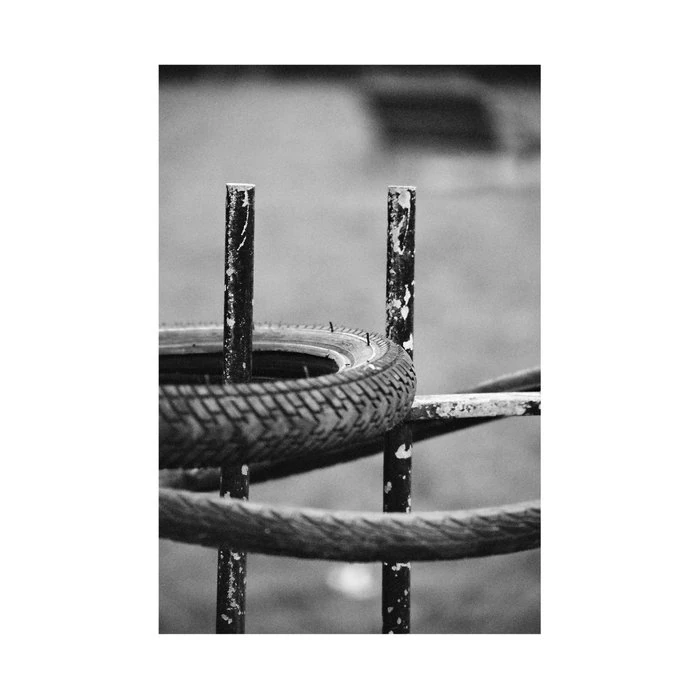
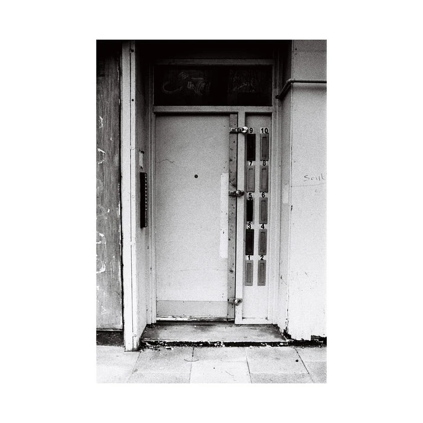

Through the Walls
Nine expansive songs moving through witness, intimacy, ritual and political unease.
- Dog Whistle
- The Daily Mail
- Mosaic
- One More Day
- Death Bed Kiss
- Another Day
- Liturgy
- Eyewitness
- Soft Snow
Folk, hip-hop, spoken word and experimental sound, moving between intimate songwriting and layered collaborative work.
Every album and track is visible here without an embedded scroll. Select a track to listen on Bandcamp.

Nine expansive songs moving through witness, intimacy, ritual and political unease.

A song cycle in nine parts, tracing shifting forms of light through voice, acoustic instrumentation and experimental arrangement.

The critically acclaimed debut Knomad Spock album: ten songs spanning folk, spoken word, hip-hop and atmospheric experimentation.
Listen or buy on BandcampExperimental collaborations and guest appearances across rap, poetry and sound.

BØMBED BUILDINGS × Knomad Spock
Black Fuzz · Last Of The Panda · Morning Coffee · Harp Tech · Stop · Terrified
Listen on Bandcamp →
A record released under the moniker Nomad.
Recorded collaborations with two leading figures in UK hip-hop.
Music reviewed and broadcast across national and independent outlets.
Clash, Afropunk, Buzz and Record Collector.
Featured on BBC Radio 6 and performed live in session for Janice Long on BBC Wales.
Live work combines music, spoken word, poetry and collaborative performance.